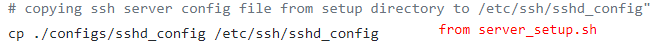

Configure from ssh
Normally to configure the Server device we can connect to it the keyboard, mouse, display and configure everything
Do a configuration remotely is a very very rare case. Normally we have not do it because we do the normal configuration locally
WARNING: The changes below has to be done only if we have to configure the Server remotelyThese are changes that we have to do before access remotely
2. We have to edit the SSH daemon configuration so to permit the root login remotely with a simple password
Yes this could be a vulnerability but we need it only for the remote configuration, after that the script server_setup.sh anyway will overwrite it with
PermitRootLogin prohibit-password prohibit-password will allow key-based access(more secure than password)
 Kali(on Intel) does not enable ssh by default, on Raspberry yes
So if we are on an Intel based computer:
daniele@TelesploitServer:/$ gedit /etc/ssh/sshd_config
Change
#PermitRootLogin prohibit-password to
PermitRootLogin yes3. Start ssh service
daniele@TelesploitServer:/$ sudo systemctl start ssh.service
4.Connect to it via ssh from the Telesploit Client to start the configuration
daniele@TelesploitClient:/$ ssh root@<IPTelesploitServer>